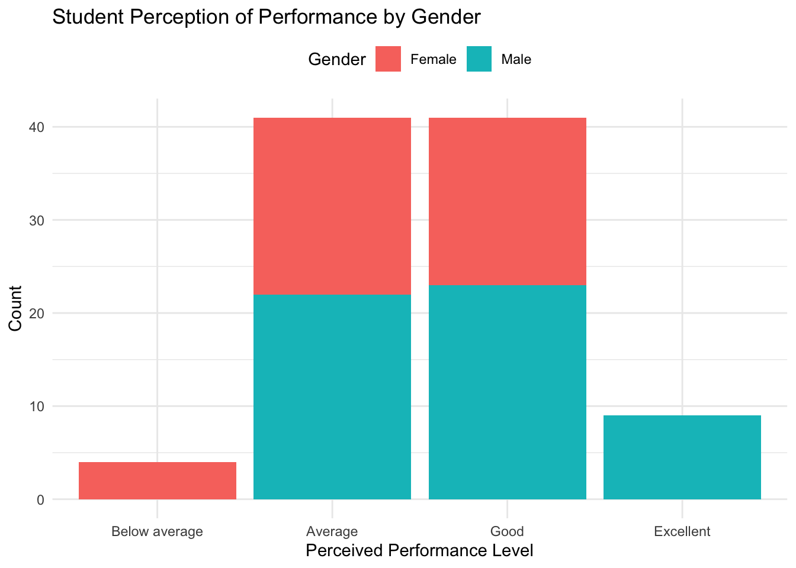
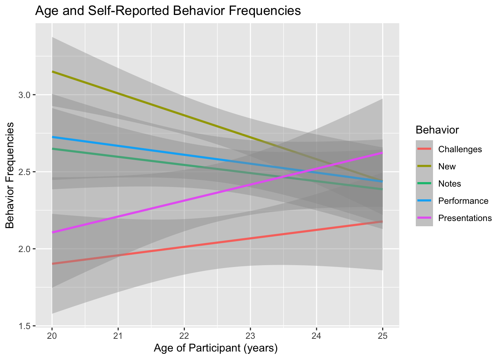

Code
library(tidyverse)
library(stringr)
library(ggplot2)
library(here)
library(kableExtra)
library(gt)
library(plotly)
library(here)This data, titled “Psychosocial Dimensions of Student Life,” includes the survey resutls from 100 computer science students surrounding their lifestyles and mental health. This analysis uses data surrounding their lifestyle and social life to determine any correlations between mental health and self-care behaviors through data analysis.
The first step was setting up the necessary packages for analysis.
library(tidyverse)
library(stringr)
library(ggplot2)
library(here)
library(kableExtra)
library(gt)
library(plotly)
library(here)In this step, I imported the csv file with the survey responses and moved the file into my directory that was relative to my project, not the local computer directory.
here :: i_am ("analysis/hp2-nadiasharapova.qmd")here() starts at /Users/nadiasharapova/Ling 343/HW FR/hp2-nadiasharapovad_raw <- read.csv(here("data/CSE_student_performances.csv"),
col.names = c("Age", "Gender", "Performance", "Notes", "Depression", "Challenges", "Presentations", "Sleep", "Friends", "New"))
d <- d_raw
.libPaths()[1] "/Library/Frameworks/R.framework/Versions/4.3-arm64/Resources/library"The data below provides insight into the variables used in my analysis.
| Variable | Meaning |
|---|---|
| Age | Represents the age of the individuals in the dataset, providing insight into the age distribution of the study. Response Type: Year |
| Gender | Indicates the gender of each individual, allowing for the exploration of gender-related patterns and trends within the dataset. This only includes male/female, which does not represent the full gender spectrum and may limit data analysis. Response Type: Either Male/Female |
| Performance | Reflects the academic achievements of individuals. Response Type: Below Average -> Average -> Good -> Excellent |
| Notes | Describes about individuals take notes during class, providing insights into study habits and engagement during lectures. Response Type: No/Sometimes/Yes |
| Depression | Indicates the presence or absence of depressive symptoms, contributing valuable information about the mental health of individuals in the dataset. Response Type: No/Sometimes/Yes |
| Challenges | Explores whether individuals encounter challenges in completing academic tasks. Response Type: No/Sometimes/Yes |
| Presentations | Reflects individuals’ preferences for presentations, offering insights into their learning style and engagement with visual or oral communication. This aim also measures if they are extroverted or introverted. Response Type: True/False |
| Sleep | Represents the average hours of sleep individuals get per day, providing information on sleep patterns and potential correlations with academic performance. Response Type: Hours of Sleep |
| Friends | Quantifies the social aspect by indicating the number of friends each individual has, contributing to the understanding of social dynamics within the dataset. Response Type: Number of Friends |
| New | Explores individuals’ receptiveness to new experiences or concepts, offering insights into their adaptability and openness to innovation. Response Type: True/False |
To analyze my data, I converted the survey data into ordered factors and set the levels. I also added a column with a participant id in case I opted to analyze individual participants.
d$Performance <- factor(d$Performance, ordered= TRUE,
levels= c("Below average", "Average", "Good", "Excellent"))
d$Notes <- factor(d$Notes, levels= c("No", "Sometimes", "Yes"))
d$Depression <- factor(d$Depression, levels= c("No", "Sometimes", "Yes"))
d$Challenges<- factor(d$Challenges, levels= c("No", "Sometimes", "Yes"))
d$New <- factor(d$New, levels= c("No", "Yes"))
d$Presentations <- factor(d$Presentations, levels= c("No", "Yes"))
d$Gender <- factor(d$Gender, levels= c("Female", "Male"))
d <- d %>%
mutate(participant_id = row_number())
d <- na.omit(d)One of the most interesting aspects of this dataset is seeing how gender impacts perceived performance in computer science. I first subset by data and after counting how they perceived their performance by gender, I noticed that women were the only ones who perceived their performance as ‘below average’ while men were the only ones who perceived their performance as ‘excellent.’
f_performance <- d %>%
filter(Gender == "Female")
m_performance <- d %>%
filter(Gender == "Male")
d %>%
count(Gender, sort=TRUE) Gender n
1 Male 54
2 Female 41f_performance %>%
count(Performance, sort=TRUE) Performance n
1 Average 19
2 Good 18
3 Below average 4f_performance %>%
count(Notes, sort=TRUE) Notes n
1 Yes 37
2 Sometimes 4m_performance %>%
count(Notes, sort=TRUE) Notes n
1 Sometimes 22
2 Yes 22
3 No 10m_performance %>%
count(Performance, sort=TRUE) Performance n
1 Good 23
2 Average 22
3 Excellent 9ggplot(d, aes(Performance))+
geom_bar(aes(fill=Gender)) +
labs(title = "Student Perception of Performance by Gender",
x = "Perceived Performance Level",
y = "Count") +
theme_minimal() +
theme(legend.position = "top")
To understand how to better alleviate student depression, I wanted to evaluate how the number of friendships impacted the reported levels of depression. I opted to subset the data into two dataframes for those with more than the median number of friends (6) and those with less than the median number of friends. In the figure below, we see that those with more than 6 friends had a significantly proportion of people reporting depression only sometimes or not at all. Those with less than 6 friends reported more consistent depression and were less likely to have depression only sometimes. However, both groups had a higher percentage of people who had depression at least sometimes than not at all. This data demonstrates that friendship likely has an impact on reducing depression levels.
df_friends <- data.frame(d[c("Age", "Gender", "Friends", "participant_id")])
median_number_of_friends <- df_friends %>%
summarize(median = median(Friends, na.rm = TRUE))
print(median_number_of_friends) median
1 6df_social<- df_friends %>%
filter(df_friends$Friends>6)
df_join_social <- df_social %>%
left_join(d, join_by(participant_id))
df_unsocial <-d %>%
anti_join(df_join_social, join_by(participant_id))
summ_social <-df_join_social %>%
count(Depression, sort= TRUE)
summ_unsocial<- df_unsocial %>%
count(Depression, sort=TRUE)
labels1 <- c("No", "Sometimes", "Yes")
labels2 <- c("Yes", "Sometimes", "No")
#set plotting area into 1*2 array
par(mfrow=c(1,2))
pie(table(df_join_social$Depression), labels1, main= "More than 6 Friends")
pie(table(df_unsocial$Depression), main= "Less than 6 Friends")